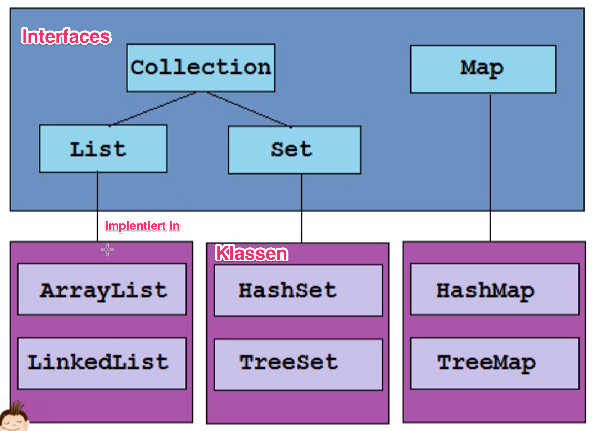

69. Collections
Klassen aus dem Java Collections Framework
Collections sind Datenstrukturen zur Verwaltung einer Menge von Daten
Kleine Auswahl:
Weitere Collections befinden sich in der API
Interface Collection:
Collections sind Generics
Gruppen von Objekten, auch Elemente genannt
Collections sind in ihrer Größe dynamisch: Es muss keine fixe Anzahl an Elemente festgelegt werden (im Gegensatz zu Array)
Jede Collection kann bestimmte Bedingungen an seiner Elementen geben (z.B. Null Reference verboten oder Duplikate verboten (2x gleiches Element))
alle Collections besitzen die Methoden des Interfaces:
add(E e): Element hinzufügenclear(): alle Elemente löschencontains(Object o): prüft ob bestimmte Objekt vorhanden istremove(Object o): entfernt einzelne ElementeremoveAll(Collections<?> c): alle Elemente entfernen die ebenso in einem bestimmten spezifischen Collection enthalten sindsize(): Anzahl der Elemente in der Collection (wie Array.length())
Collection implementiert das Interface Iterable: es können daher z.B. forEach-Schleifen verwendet werden
Interface List:
geordnete Collection, d.h. jedes Element hat seinen festen Platz (wie Array)
Element kann an beliebiger Stelle eingefügt und eine Element an einer beliebigen Position abgefragt werden
Methoden stammen zum größten Teil aus dem Interface Collection. Weitere wichtige Methoden:
add( int index, E element): fügt Element e an die Position von index ein
get (E index): Gibt das Element von an der Stelle index zurück
Klasse ArrayList:
wird ein Element an einer bereits besetzten Stelle hinzugefügt, wird das bisherige und alle anschließenden um eine Position nach hinten verschoben
beim Hinzufügen wird ein primitiver Wert in einen Wrapper umgewandelt und als Objekt in die Liste geschrieben (Auto-Boxing):
list.add(12); list.add(20); list.add(1, 10);
bei einer Abfrage z.B. mit einer forEach Schleife wird über den index abgefragt und der Wert wieder als primitiver Datentyp umgewandelt (AutoUnboxing):
for (int i : list){ System.out.println(i); }
Wichtig: Eine Liste sollte stets auf möglichst abstrakte Weise referenziert werden (Regel: so abstrakt wie möglich):
List<Integer> list = new ArrayList<Integer>();
hier: es wird List verwendet um die Variable womöglich zu einem spätere Zeitpunkt an eine andere Art von Liste (nicht ArrayList) zuzuweisen
Klasse LinkedList:
Wie ArrayList mit folgenden Unterschieden:
eine ArrayList verwaltet die Elemente in einem Array, eine LinkedList verwaltet diese in einer Kette von Knoten, wobei jeder Knoten mindestens die Adresse des nächsten Knoten kennt (womöglich auch die des vorangehenden)
Algorithmen arbeiten anders - in manchem Situationen ist eine LinkedList schneller, manchmal eine ArrayList
Faustregel
ArrayList sind schneller beim zufälligen Zugriff auf die Elemente der Liste (LinkedList müssten alle Knoten von hinten oder vorne durchlaufen)
ArrayList sind langsamer beim hinzufügen von Elementen an einer beliebige Position des besetzen Arrays, da alle nachfolgenden Elemente verschoben werden müssen. Bei LinkedList müssen lediglich wenige Zeiger angepasst werden
Interface Set:
Unterschiede zu List:
ein Set erlaubt keine Duplikate
die Elemente werden nicht geordnet gespeichert (es gibt keinen index und keine get-methode für bestimmte Elemente -> es können nur alle Elemente eines Sets zugleich verwendet werden)
Duplikate können auch nicht als neues Objekt ins Set geschrieben werden
(add.(new String ("cxc")). Dann wäre die Gleichheit per == zwar nicht
gegeben, aber es würden dann zwei String Objekte mit dem gleichen Inhalt
existieren und die Gleichheit per equals ist gegeben.
Sets definieren Gleichheit per equals, also den tatsächlichen Wert des Datentyps und nicht die Speicheradresse
Das gleiche gilt für
remove(Object o)undcontains(Object o)HashTest
Klasse HashSet:
siehe HashPerformanceDemo.java und
HashTestElement.java.
Gegebenheit:
Ein HashSet verwalten intern sogenannte buckets (Eimer). Ein bucket kann ein oder mehrere Elemente enthalten. Alle Elemente dieser Collection sind auf diese buckets aufgeteilt. Jeder bucket hat einen Nummer (wie der index eines Arrays), die jeweils einen hashCode darstellt. Beim Hinzufügen eines neuen Elements in eine hash-basierende Struktur wird zunächst der hashCode des Elements gebildet und wird entweder in den bereits existenten bucket geworfen oder ein neuer wird erstellt.
Also:
Gibt es wenige verschiedene buckets, dauert das Finden eines Elements (beim Aufruf) anhand seines hashCodes sehr lange, als wenn dieser einzigartig ist
Die Reihenfolge der Ausgabe ist nicht zwingend die der Eingabe
Die Reihenfolge der Ausgabe eines HashSets kann sich im Laufe des Programms ändern
Klasse TreeSet:
Die Reihenfolge ist fix und entspricht der Reihenfolge des Hinzufügens
Interface Map:
stellt nicht die Methoden der Collection bereit
eine Map ist eine Menge an Tupelo (Paaren, deren Elemente einander zugeordnet sind)
besitzt zwei Generics: K key, V value
keine add-Methode
hat quasi zwei gekoppelte Listen: 1 x Werte + 1 x Schlüssel
Methoden:
put(K key, V value): fügt ein Element mit dem Wert value und dem Schlüssel key in die Map ein:map.put("BMW", 12);
get(Object key): erwartet einen Schlüssel:int i = map.get("BMW");Unterschiede von HashMap und TreeMap ebenso wie bei HashSet und TreeSet
Faustregel
Maps verwendet man, wenn man zwei Daten fest aneinander koppeln will.
Attention
Ein Array ist immer noch das schnellste Konstrukt zur Verwaltung mehrere Werte, daher Collections nur verwenden wenn nötig.
Die Klasse Collections (nicht zu verwechseln mit dem Interface Collection) bietet Methoden zum Verwalten einer Collection, z.B.
Sortieren einer Liste
Eine Liste unveränderlich machen